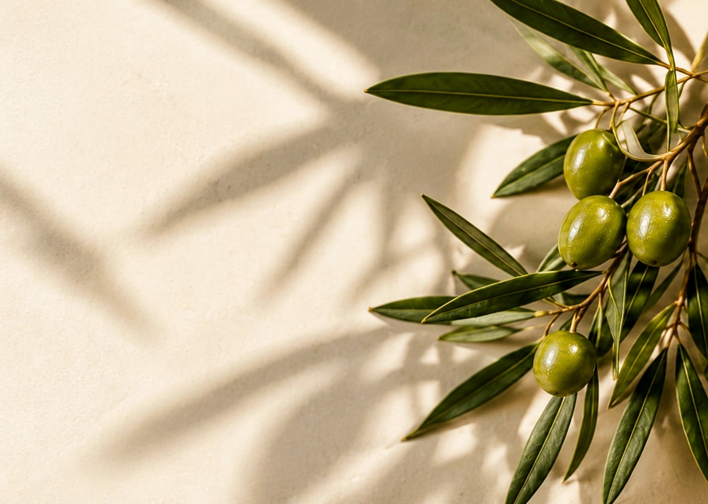

Calidad
Cuidamos la selección y la presentación de cada producto.
EL ORIGEN DE LO EXTRAORDINARIO
De nuestra tierra, a tu mesa.
EL ORIGEN
OLIVARÉ es una marca ficticia creada para representar la riqueza de la cultura olivícola sanjuanina. Su identidad combina el respeto por la tierra, la búsqueda de calidad y el placer de compartir buenos sabores.
Cada detalle de la marca —desde la selección de productos hasta su presentación— busca transmitir una experiencia cercana, natural y cuidada.

LO QUE NOS DEFINE
Cuidamos la selección y la presentación de cada producto.
Celebramos la identidad, los paisajes y los sabores de San Juan.
Creemos que los mejores momentos se construyen alrededor de la mesa.

NUESTRA FILOSOFÍA
Buscamos que cada producto sea una invitación a disfrutar: una buena comida, una charla larga o un pequeño gesto para alguien especial.
Conocé nuestros productos